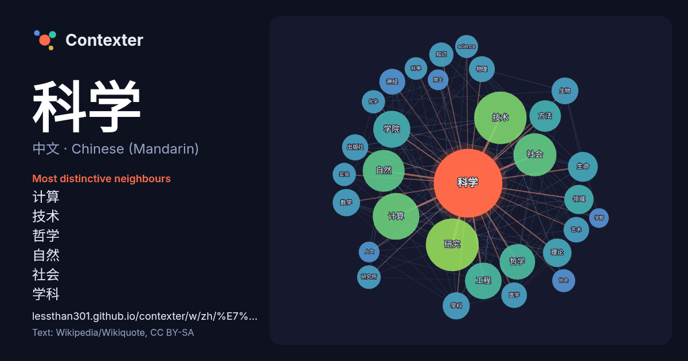

中文 · Chinese (Mandarin) · popular word
科学
“science” · The words found around it in 1742 instances from Chinese (Mandarin) Wikipedia, Wikiquote.

Most distinctive neighbours
- 计算 67×
- 技术 58×
- 哲学 55×
- 自然 45×
- 社会 37×
- 学科 35×
- 神经 33×
- 领域 33×
- 数学 33×
- science 31×
- 医学 30×
- 学院 29×
- 生命 29×
- 研究 28×
- 知识 26×
- 理论 26×
- 出版社 24×
- 物理 24×
- 工程 24×
- 院士 24×
× = how many times more often than in general Chinese (Mandarin) Wikipedia text.
Most frequent neighbours
- 研究 174
- 技术 172
- 计算 136
- 中国 132
- 社会 116
- 自然 110
- 学院 86
- 工程 84
- 哲学 79
- 方法 62
- 生命 56
- 领域 54
- 理论 51
- 主义 47
- 发展 47
- 数学 47
- 学科 46
- 生物 45
- 国家 44
- 出版社 43
In context
- 科学主题 理工 大眾科学 伪科学 迷信 學術 同行評審 科學研究 科学学 科学哲学 自然辩证法 科学知识社会学 科學史 科学主义 科学文艺 科学实验 科学革命 科学归纳法 科学演绎法 科学理论 科学预见 科学模型 科学共同体 科学观察 科学分类 科学发现 大科学 科技 “……现代科学 Wikipedia snippets · 科学
- 科学主义（英語：Scientism）是一种思想，是指科学是最权威的世界观，也是人类最重要的知识，其高於所有一切其他東西对生活的诠释。 「科学主义」这个词曾被社会科学家如弗里德里希·哈耶克、科学哲学家如卡尔·波普尔和哲学家如希拉里·普特南和茨维坦·托多洛夫使用，用来描述许多科学 Wikipedia snippets · 科学主义
- 计算机科学主题 未解決的计算机科學問題 计算机科学家的学术家谱 计算机科学家 计算 计算机科学的历史 中国计算机科学大事年表 信息学 学术计算机科学系列表 计算机科学会议列表 计算机科学家列表 计算机科学开放问题列表 计算机科学出版物列表 计算机科学先驱列表 软件工程主题列表 计算机科学的哲学 计算机领域中的女性 Wikipedia snippets · 计算机科学
- 元科学或元研究也被誉为“关于研究的研究”或“研究科学的科学”，是用科学方法研究科学的学科，旨在提高科学研究的质量和效率。元科学关注所有领域，试图改进所有的研究方法。如约翰·约阿尼迪斯（John Ioannidis）所说：“科学是人类最伟大的成就……但我们还能做得更好。” Wikipedia snippets · 元科学
- 《科學怪人》（英語：Frankenstein），是英國女作家玛丽·雪莱的作品，里面科学家维克多·弗兰肯斯坦利用从坟墓挖掘出的尸体制造了人造人。也可譯成《科學怪人：另一個普羅米修斯》（英語：Frankenstein; or, The Modern Prometheus），又译作《弗蘭肯斯坦》，是西方 Wikipedia snippets · 科學怪人
- 社会科学：在社会和文化角度研究人类行为的科学。 科学知识必须建立在可观察的现象之上，并且能够在相同条件下被其他研究者验证。自然科学、社会科学和形式科学构成基础科学，它们也是跨学科和应用科学（如工程学和医学）的基础。 形式科学是研究形式系统的科学分支，包括逻辑、数学、理论计算机科学 Wikipedia snippets · 科学分支
- 联合国教育、科学及文化组织（法語：Organisation des Nations unies pour l'éducation, la science et la culture，缩写：ONUESC；英語：United Nations Educational, Scientific and Cultural Wikipedia snippets · 联合国教育、科学及文化组织
- 如用更煊赫的头衔应 称之为“科学之光”、“法律之舌” 培根是第一個意识到科學及其方法論的历史意义以及它在人类生活中可能扮演的角色的人。他試图通过分析和确定科学的一般方法和表明其应用方式，给予新科学运动以发展的动力和方向。 培根是一位哲学家。他一开始就探索实验方法的各种可能性，他说他要做科学 Wikipedia snippets · 弗朗西斯·培根
More Chinese (Mandarin) words
Precomputed on 2026-10-09 with default settings (±5 words, medium corpus). The interactive map can refresh it with live data.